Real results · interactive
Every case slides.
Fourteen consented cases from the program’s 248-case library — the same surgeons, the same standard, at either campus. Each is a draggable before/after — filter by what you’re considering. Every image is attributed to its operating surgeon, straight from the gallery backend.
14 items shown
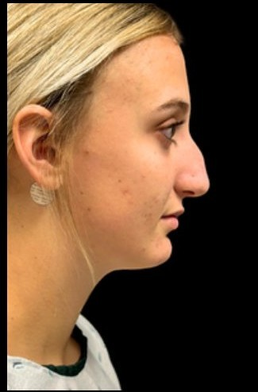
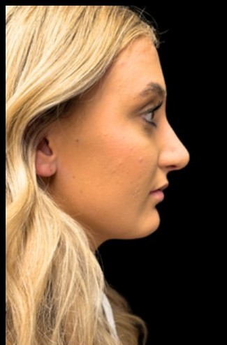
BeforeAfterDrag to compare
Rhinoplasty — profile · by Dr. Cuzalina
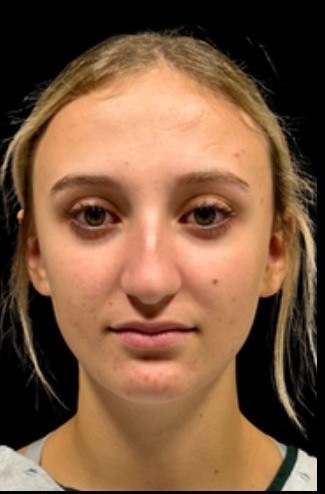
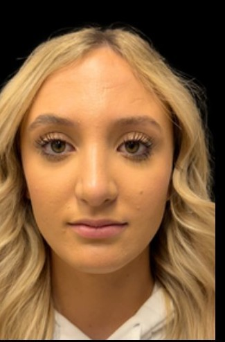
BeforeAfterDrag to compare
Rhinoplasty — front · by Dr. Cuzalina
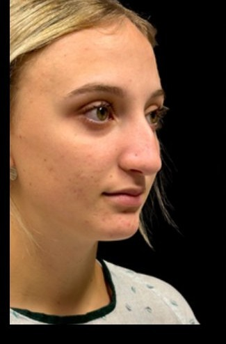
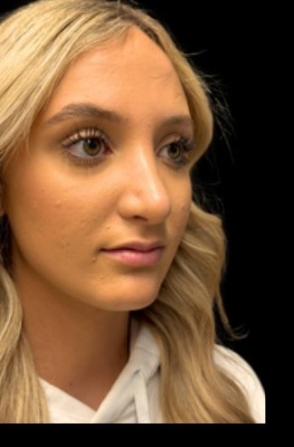
BeforeAfterDrag to compare
Rhinoplasty — three-quarter · by Dr. Cuzalina
Drag to compare
Deep plane facelift · by Dr. Cuzalina
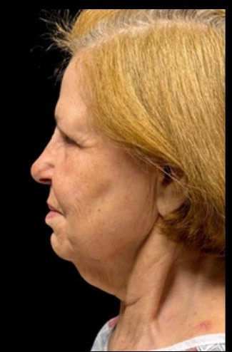
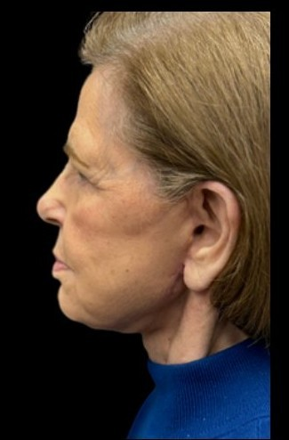
BeforeAfterDrag to compare
Lower face & neck lift — profile · by Dr. Cuzalina
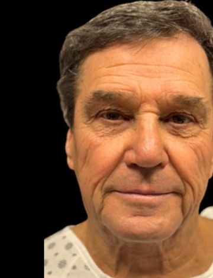
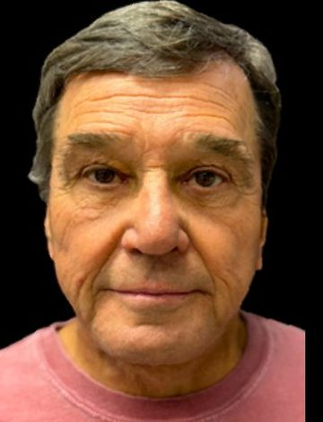
BeforeAfterDrag to compare
Male facelift · by Dr. Cuzalina
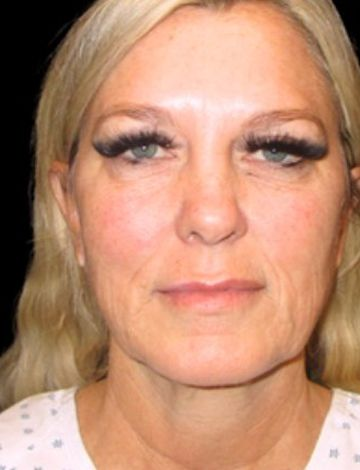
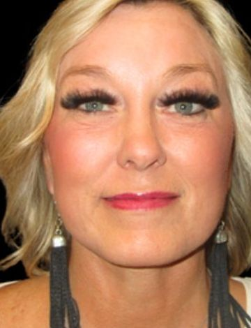
BeforeAfterDrag to compare
Facial rejuvenation + CO2 laser · by Dr. Cuzalina
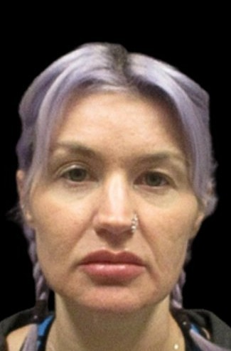
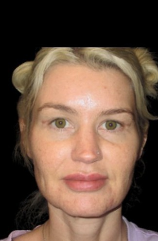
BeforeAfterDrag to compare
Upper blepharoplasty · by Dr. Champion
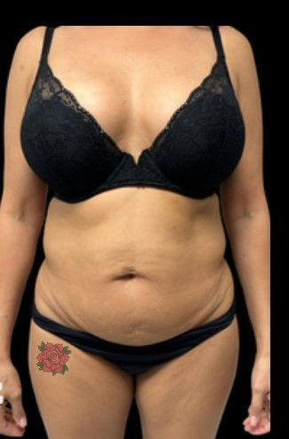
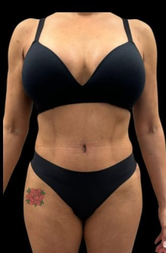
BeforeAfterDrag to compare
Tummy tuck, hi-def lipo & BBL — front · by Dr. Tolomeo
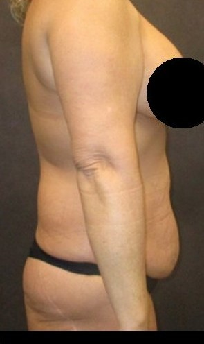
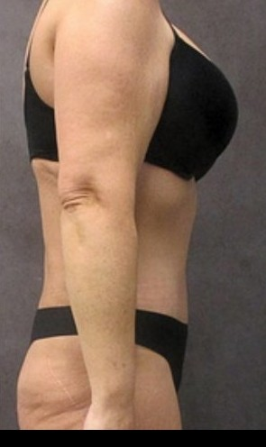
BeforeAfterDrag to compare
Tummy tuck & lipo 360 — profile · by Dr. Cuzalina
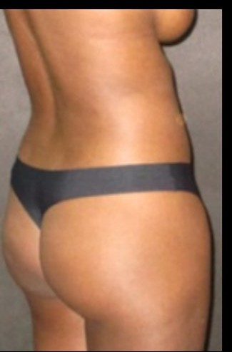
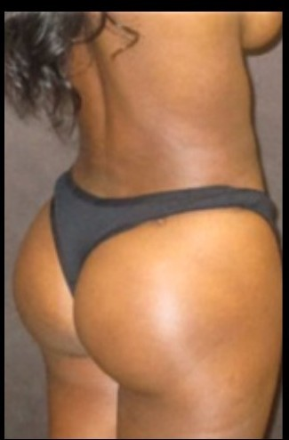
BeforeAfterDrag to compare
Brazilian butt lift & hi-def lipo · by Dr. Cuzalina
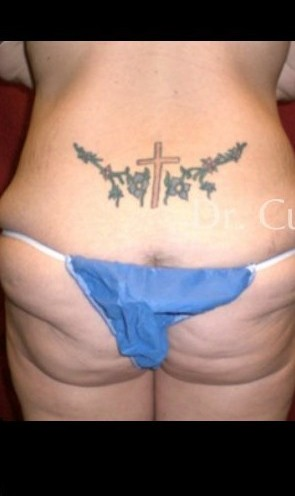
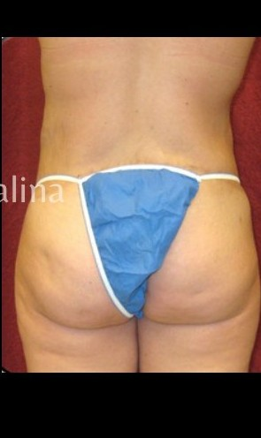
BeforeAfterDrag to compare
Brazilian butt lift + formal butt lift · by Dr. Cuzalina
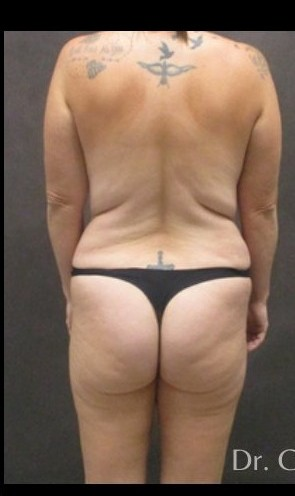
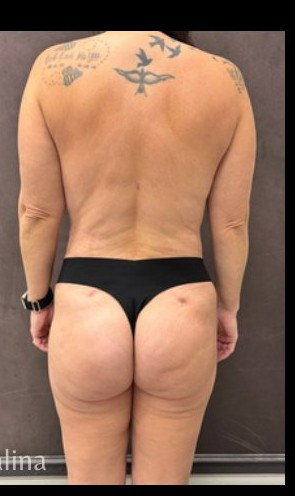
BeforeAfterDrag to compare
Mommy makeover — back · by Dr. Cuzalina
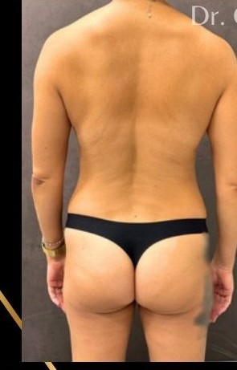
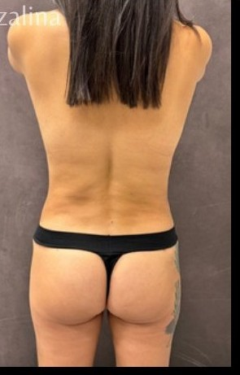
BeforeAfterDrag to compare
Full mommy makeover · by Dr. Cuzalina
Backend counts recomputed at build time from the consent-verified case library (2026-08-18). Sensitive-classified imagery is never featured; expired consent throws at build. The full library publishes procedure-by-procedure at launch.